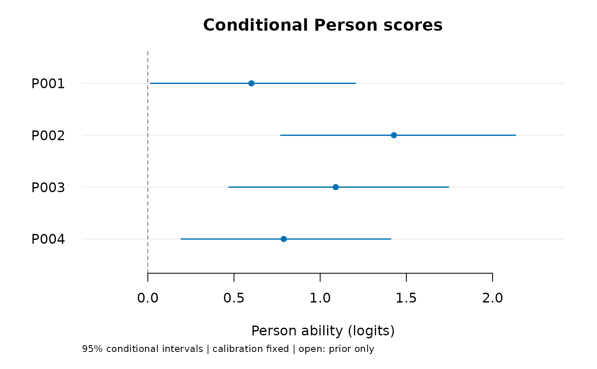

Estimate abilities for people already included in a fitted RSM
Source:R/api-person-scoring.R
score_mfrm_persons.RdUse the existing ratings and fitted model to estimate each person's ability. This is the common scoring entry for supported ordinary, shared-rater and testlet rating-scale models (RSMs). It reuses the fitted calibration, such as rater severity and category thresholds; it does not fit the model again.
Arguments
- fit
A numerically ready ordinary RSM MML, testlet or shared-rater fit.
- persons
Distinct source Person IDs;
NULLreturns all source Persons, including Persons whose assigned scores are all missing. For a shared-rater fit, start with a few actual IDs: scoring everyone can be slow. Selecting IDs changes output rows, not the data used to account for shared raters.- level
Conditional equal-tail interval probability, between zero and one.
- quad_points
Extension quadrature order;
NULLuses its fit's order. Ordinary ability integration is continuous and does not use quadrature; leave this argumentNULLfor ordinary fits.- object, x
An ordinary
mfrm_person_scoresresult.- ...
Display controls passed to
plot.mfrm_testlet_scores(); unused by print and summary.
Value
Ordinary fits return mfrm_person_scores with table,
scoring_data, data usage, settings and source metadata. Extensions retain
their existing scoring classes. Supply saved scores to compare_mfrm()
as person_scores; extension scores also support model-aware maps through
mfrm_results(). Saved plots/reports do not recompute scores.
Details
The estimate is the mean of the conditional ability distribution (EAP). Posterior SDs and continuous equal-tail intervals describe its uncertainty with calibration held fixed. Selecting persons changes the returned rows, not the ratings used to condition shared effects.
Ordinary fits use the bounded model/population specification of
mfrm_response_diagnostics(): additive unanchored severity facets and
known N(0,1) or an estimated intercept-only normal population. Both the
fitted population mean and variance are retained. EAP, posterior SD and
interval endpoints integrate the continuous conditional density; endpoints
are not quadrature-grid quantiles. Ordinary plug-in scoring is unchanged.
For extensions this calls predict.mfrm_testlet() or
score_mfrm_random_rater() on the complete source roster. Their numerical
checks, approximation limits and uncertainty definitions apply unchanged.
Use those functions directly for a different complete scoring roster.
Intervals condition on fitted calibration and the assumed normal
population. They exclude calibration-estimation uncertainty, do not test
Person differences and do not guarantee frequentist coverage for each
fixed ability. Missing-only Persons remain prior_only; zero ability
variance and failed integration return unavailable, not zero-width
intervals. No missing scores are imputed.
See also
score_mfrm_calibration() for new people under an eligible saved
ordinary RSM/PCM calibration; plot.mfrm_testlet_scores(),
mfrm_response_diagnostics()
Examples
# \donttest{
ratings <- load_mfrmr_data("example_core")
fit <- fit_mfrm(ratings, "Person", c("Rater", "Criterion"), "Score")
scores <- score_mfrm_persons(fit, persons = unique(ratings$Person)[1:4])
scores$table
#> Person Observed Estimate ConditionalSD Lower Upper
#> 1 P001 16 0.6011637 0.3029716 0.01607092 1.204810
#> 2 P002 16 1.4278211 0.3473444 0.77099827 2.133671
#> 3 P003 16 1.0902409 0.3249421 0.47028319 1.745150
#> 4 P004 16 0.7888096 0.3099718 0.19292475 1.409104
#> Status Reason
#> 1 available_conditional
#> 2 available_conditional
#> 3 available_conditional
#> 4 available_conditional
plot(scores)

# }